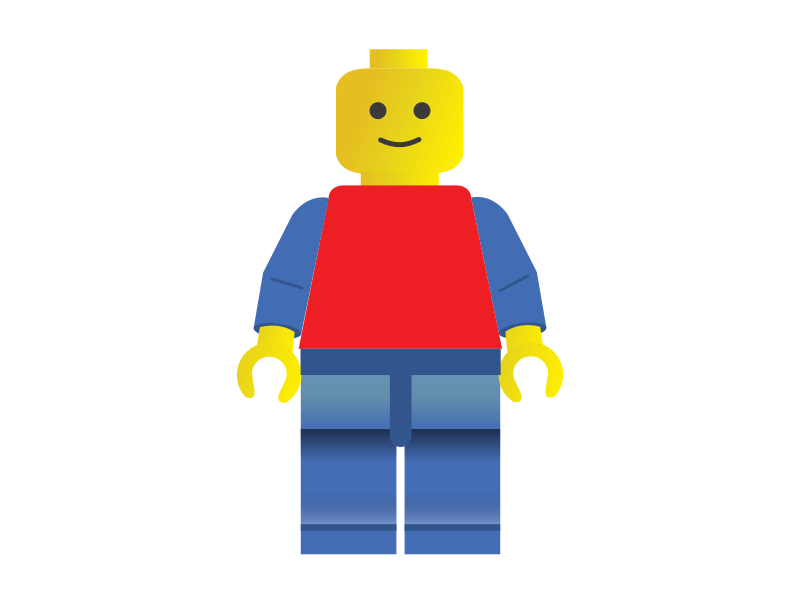

SVG
inserção de SVG como se fosse uma imagem;

inserção de SVG como background
Uma inserção de SVG com o código inline
inserção de um retângulo, um círculo, uma linha, e um polígono todos feitos com SVG, para o polígono foi utilizado classes para definir suas cores.
Uma inserção inline de um ícone SVG que ao receber o houver do mouse, troque a cor de algum dos seus elementos.